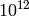
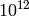
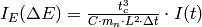
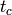
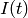

TOFTOFConvertTofToDeltaE dialog.
Table of Contents
| Name | Direction | Type | Default | Description |
|---|---|---|---|---|
| InputWorkspace | Input | MatrixWorkspace | Mandatory | Input Sample workspace |
| EPPTable | Input | TableWorkspace | Input EPP table (optional). May be produced by FindEPP algorithm. | |
| OutputWorkspace | Output | Workspace | Mandatory | Name of the workspace that will contain the result |
Warning
This algorithm will be deprecated in the next version of Mantid. Please, use ConvertUnits v1 and ConvertToDistribution v1 instead. To correct time-of-flight considering the fitted elastic peak position, use algorithm CorrectTOF v1.
Converts X-axis units of the given workspace or group of workspaces from time-of-flight to energy transfer. Conversion is performed in a following way. The new X-axis data ( , meV) are calculated as
, meV) are calculated as

where  is the sample-detector distance,
is the sample-detector distance,  is the neutron mass,
is the neutron mass,  is the time-of-flight corresponding to the elastic peak and
is the time-of-flight corresponding to the elastic peak and  is the time-of-flight from sample to detector.
is the time-of-flight from sample to detector.

where  is the total TOF corresponding to the bin boundaries of the X data in the input workspace and
is the total TOF corresponding to the bin boundaries of the X data in the input workspace and  is the TOF from source to sample. Coefficient
is the TOF from source to sample. Coefficient  is related to the unit conversion and calculated as
is related to the unit conversion and calculated as

where  is the coefficient to convert energy from eV to Joule,
is the coefficient to convert energy from eV to Joule,  is the coefficient to convert eV to meV and  is the coefficient to convert
is the coefficient to convert eV to meV and  is the coefficient to convert  to
to  .
.
In contrast to the ConvertUnits v1, this algorithm calculates the new Y values  as
as

where  is the time-of-flight corresponding to the bin centre in the X data in the input workspace, is the time channel width, and  are the Y data in the given input workspace.
This algorithm offers two options for calculation of the elastic peak position :
- If EPPTable is not given, position of the elastic peak will be taken from the EPP sample log.
- If EPPTable is given, position of the elastic peak will be taken from the PeakCentre column.
If position of the elastic peak cannot be determined or  for a particular detector, this detector will be masked in the output workspace and warning will be produced.
for a particular detector, this detector will be masked in the output workspace and warning will be produced.
The unit of the X-axis must be Time-of-flight.
Workspace must contain following sample logs: channel_width, EPP, TOF1.
Workpace must have an instrument set.
If table EPPTable is given:
- number of rows of the table must match to the number of histograms of the input workspace.
- table must have the PeakCentre column.
Note
The input EPPTable can be produced using the FindEPP v1 algorithm.
Example 1: Convert using the default option.
import numpy
# create workspace with appropriate sample logs
ws_tof = CreateSampleWorkspace(Function="User Defined", UserDefinedFunction="name=LinearBackground, \
A0=0.3;name=Gaussian, PeakCentre=8000, Height=5, Sigma=75", NumBanks=2, BankPixelWidth=1,
XMin=6005.75, XMax=9995.75, BinWidth=10.5, BankDistanceFromSample=4.0, SourceDistanceFromSample=1.4)
lognames="channel_width,EPP,TOF1"
logvalues="10.5,190.0,2123.34"
AddSampleLogMultiple(ws_tof, lognames, logvalues)
ws_dE=TOFTOFConvertTofToDeltaE(ws_tof)
print "Unit of X-axis before conversion: ", ws_tof.getAxis(0).getUnit().unitID()
print "Unit of X-axis after conversion: ", ws_dE.getAxis(0).getUnit().unitID()
print "First 5 X values before conversion: ", ws_tof.readX(0)[:5]
print "First 5 X values after conversion: ", numpy.round(ws_dE.readX(0)[:5], 2)
Output:
Unit of X-axis before conversion: TOF
Unit of X-axis after conversion: DeltaE
First 5 X values before conversion: [ 6005.75 6016.25 6026.75 6037.25 6047.75]
First 5 X values after conversion: [-3.13 -3.1 -3.07 -3.04 -3.01]
Example 2: Convert using the elastic peak positions from table
import numpy
# create workspace with appropriate sample logs
ws_tof = CreateSampleWorkspace(Function="User Defined", UserDefinedFunction="name=LinearBackground, \
A0=0.3;name=Gaussian, PeakCentre=8000, Height=5, Sigma=75", NumBanks=2, BankPixelWidth=1,
XMin=6005.75, XMax=9995.75, BinWidth=10.5, BankDistanceFromSample=4.0, SourceDistanceFromSample=1.4)
lognames="channel_width,EPP,TOF1"
logvalues="10.5,190.0,2100.34"
AddSampleLogMultiple(ws_tof, lognames, logvalues)
# create a table with elastic peak positions
table=FindEPP(ws_tof)
# run unit conversion
ws_dE=TOFTOFConvertTofToDeltaE(ws_tof, EPPTable=table)
print "Unit of X-axis before conversion: ", ws_tof.getAxis(0).getUnit().unitID()
print "Unit of X-axis after conversion: ", ws_dE.getAxis(0).getUnit().unitID()
print "First 5 X values before conversion: ", ws_tof.readX(0)[:5]
print "First 5 X values after conversion: ", numpy.round(ws_dE.readX(0)[:5], 2)
Output:
Unit of X-axis before conversion: TOF
Unit of X-axis after conversion: DeltaE
First 5 X values before conversion: [ 6005.75 6016.25 6026.75 6037.25 6047.75]
First 5 X values after conversion: [-3.08 -3.06 -3.03 -3. -2.97]
Categories: Algorithms | Workflow\MLZ\TOFTOF | Transforms\Units | CorrectionFunctions
Python: TOFTOFConvertTofToDeltaE.py